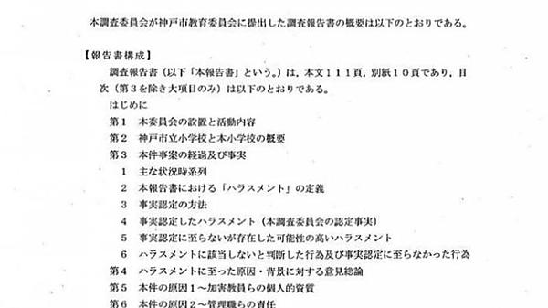

バイデン氏は記者も驚く“衰え”ぶり。躍進のブダジェッジ氏も歓声はトランプ氏の3分の1
2月3日、アイオワ州で米大統領選挙の火ぶたが切られた。ジョー・バイデン氏、バーニー・サンダース氏が有力視されるなか、トップに躍り出たのは彼らより40歳近く若い、ピート・ブダジェッジ氏だった。ジャーナリスト・津山恵子が、現地で民主党候補の集会を取材したAERA 2020年2月17日号を紹介する。
【写真特集】5人の民主党候補の集会の様子はこちら
＊ ＊ ＊
とうもろこし畑の上に雪が積もった荒野が果てしなく広がるアイオワ州の人口は、わずか315万人。ニューヨーク市の半分よりはるかに少ないこの地に、4年に1度、大統領候補者指名争いをする候補者と、内外メディア数千人が殺到する。全米で最初に開かれる党員集会だけに、「選挙の行方に大きな影響を与える」とされているためだ。
私が取材した2008年の党員集会でも、バラク・オバマ前大統領が、最有力とされたヒラリー・クリントン上院議員（当時）を破って急浮上し、本選挙での勝利を決めた。
2月3日の党員集会で勝利するために、各候補者は何カ月も前からアイオワ州詣でを始める。直前には全員が同州に入り、1日に数回の選挙集会を開く。そこで、ピート・ブダジェッジ・インディアナ州サウスベンド前市長（38）、バーニー・サンダース上院議員（78）、エリザベス・ウォーレン上院議員（70）、ジョー・バイデン前副大統領（77）、実業家アンドリュー・ヤン氏（45）と、5人の民主党候補の集会をはしごした。
「ハロー、アイオワ！」
ステージに駆け上がったブダジェッジ氏が言うと、キャーッと歓声が上がった。高校の体育館を埋め尽くす2千人の支援者らは、笑顔に満ち、「ブ・ダ・ジェッジ、ブ・ダ・ジェッジ」と掛け声を始める。それをニコニコと受け止めるメイヤー・ピート。
「新たなアプローチをして、ドアを開けば、選挙に勝てることは歴史が証明済みだ。大切なのは、米国人を分断するのではなく、奮い立たせることだ。トランプを負かすという目的のためだけではなく、私たち自身のために！」
と、「結束」を訴えた。同性愛者のパートナー、チャスティン・ブダジェッジ氏（30）もこれに先立ちアイオワ州内を回り、幅広い支援者にアピールした。
- 室井佑月「心底、呆れた」 (01/16)
- 元防衛大臣・驚愕の発言「なんでこんなに必要だったの？」 沖縄・ヘリパッド建設強行の舞台裏 (01/27)
- Promoted 英語は「81文暗記」すれば話せる!?通訳になった女性の勉強法 (12/31) ウェンズデー
- 内田也哉子、17歳のとき夫・本木雅弘に買ってもらったコム・デ・ギャルソンに母を見た (10/11)
- エリカさま「女優復帰の資格ない」 事務所がクビを切らない本当の理由 (02/05)
- Promoted カローラ ツーリング登場 ディスプレイがスマホと連携 次世代の機能を、あなたへ (12/31) by トヨタ自動車
- ゲッターズ飯田「2020年は価値観の大転換が起こる年」 (01/02)
- Promoted 「平均104万円も!?」火災保険金が受け取れる裏技がすごかった (12/31) 日本住宅修繕協会
-  懲戒免職になった東須磨小学校の男性教諭がしでかした伏字にされたセクハラ行為 (03/08)
- Promoted ウソみたい、グルコサミンを超えるパワー！ダイドードリンコが開発 (12/31) ダイドードリンコ
- “殿堂入り”田淵幸一に東尾修が「それはやめてくれ」と懇願したことは？ (01/25)
- 美輪明宏「さすがに体力的にも無理じゃないかと」脳梗塞後の変化 (02/15)


 アメリカ大統領選が派手な「政治ショー」になる理由と...
アメリカ大統領選が派手な「政治ショー」になる理由と...(11/07) dot.
- テレビ討論は“ヒラリー勝利”なのに「トランプ大統領...
(10/04) AERA
 ドナルド・グローヴァー、米大統領選の民主党候補アン...
ドナルド・グローヴァー、米大統領選の民主党候補アン...(12/19) Billboard JAPAN
 米大統領選「劣勢」トランプ氏の新選挙参謀は「危険な...
米大統領選「劣勢」トランプ氏の新選挙参謀は「危険な...(08/31) AERA
 米大統領選「トランプもクリントンも金まみれ」有権者...
米大統領選「トランプもクリントンも金まみれ」有権者...(03/08) AERA
- 「ひと言多い」松岡茉優にイラッときてしまうのは何故なのか？ (10/11)
- 鈴木おさむ「ある女性タレントの顔が…」整形手術が“麻痺”する感覚 (11/21)
- 来季にFA権を取得する巨人・小林誠司が他球団から熱視線を浴びるワケ (11/17)
- 今井絵理子政務官に自民党からブーイング 所属していた芸能事務所が多額献金 交際の元神戸市議は雲隠れ (09/16)
- Promoted 世界各地で見つかった巨大すぎる動物達 (11/29) japacrunch
- Promoted 「81文だけ覚えて」イギリス学者が発表、大人の英語習得の秘訣 (12/31) ウェンズデー
- 有力33私大を七つの指標で分析 (10/18)
- Promoted 京都府: 驚きの品質で驚きの安価のスマートウォッチ (12/31) eWatch
- 【100社ランキング】元社員による「辞めたけど良かった企業」はここだ！ (02/28)
- 「オッケー」とは言えない ローラをテレビで見かけなくなった理由 (09/24)
- 水野美紀 気がつけば小池徹平の股の間に頭が…「奪い愛、夏」で最も痺れたシーンとは (09/19)
- 落合博満、石井一久に“批判”も…野球を深く知る「元プロ」はGMには向かない？ (12/21)
- Promoted 美人すぎる三つ子！DNAテストで分かった衝撃的な結果とは (11/06) PostFun
- Promoted 比べてみたら想像以上！奇妙な生き物の実寸大とは (12/20) PostFun
- 元CAの妻が激白 立憲・枝野代表に「初めて怒鳴られた」出来事 (10/23)
- Promoted あなたの真ん中へ、この世界の真ん中へ 新しくなったカローラ スポーツ (12/31) by トヨタ自動車